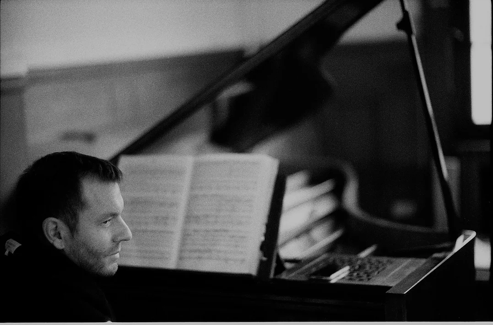

C'est sous la bannière de l'Armée des Romantiques que se sont rassemblés des compagnons fidèles tels que la soprano Magali Léger, le baryton Alain Buet, le violoncelliste Emmanuel Balssa, le pianiste Rémy Cardinale, les violonistes Shunske Sato, Girolamo Bottiglieri, Raya Raytcheva, l’altiste Caroline Cohen-Adad, le clarinettiste Lorenzo Coppola… Cette Armée bien singulière a pour ambition de réinterpréter les chefs d’œuvres de la musique de chambre du XIXe siècle sur instruments historiques, en repositionnant cette musique novatrice dans le contexte intellectuel et artistique de l’époque.
Les programmes des concerts de l’Armée des Romantiques visent à restituer l’atmosphère d’effervescence, de découverte et les débats passionnés qui animèrent tout le XIXe siècle. Dans cet esprit, le concert donne lieu à des commentaires et des explications par les interprètes sur le contexte historique, les partitions et les instruments, favorisant une écoute instruite entre les musiciens et le public.
L’Armée des Romantiques affirme son engagement pour l’interprétation sur instruments historiques qui s’avère être la seule réponse crédible pour rendre la modernité des œuvres jouées. Notre pratique régulière des instruments anciens nous amène à nous interroger sur l’héritage transmis par le XXème siècle. Leurs sonorités, leurs couleurs, leurs dynamiques, bousculent nos propres habitudes et certitudes sur l’interprétation des œuvres. Ce nouveau prisme sonore qu’offrent les instruments anciens, réactive notre écoute, bouleverse nos attentes et redonne une nouvelle jeunesse à un répertoire parfois figé dans le temps.
L'Armée des Romantiques est convaincue de l'importance qu'il y a de donner un autre sens à notre art. Les dérives actuelles que sont l'ultra médiatisation, le culte de la personnalité, la logique des modes, sont autant d'artifices qui nous empêchent de repenser l'art d'une manière sereine. La subversion à laquelle nous appelons, passera par une autre façon d’aborder le concert et par là, rendre l’écoute plus active, plus passionnée, plus joviale, plus réfléchie… Gageons que notre envie rende notre art un peu plus désirable pour le plus grand nombre.
L'Armée des Romantiques se trouve actuellement en résidence à la Fondation Singer-Polignac à Paris et à l'Académie Bach à Arques-la-Bataille.